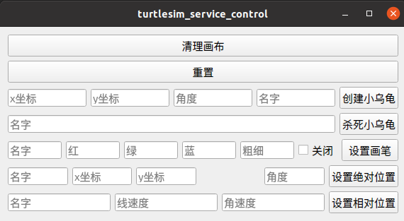

<!DOCTYPE lake>
<h1 data-lake-id="VgIQZ" id="VgIQZ"><span data-lake-id="ua14e7be8" id="ua14e7be8" style="color: rgb(51, 51, 51)">需求介绍与分析</span></h1><p data-lake-id="ue3e68e97" id="ue3e68e97"><span class="lake-fontsize-12" data-lake-id="u05fba488" id="u05fba488" style="color: rgb(51, 51, 51)">实现图形化界面，来控制小乌龟的运行。</span></p><p data-lake-id="u00d85eb9" id="u00d85eb9"></p><blockquote data-lake-id="ue3e8a616" id="ue3e8a616"><p data-lake-id="uec8b0e8b" id="uec8b0e8b"><span class="lake-fontsize-12" data-lake-id="u7563a804" id="u7563a804">通过点击不同的按钮实现对小乌龟的控制</span></p><p data-lake-id="u644c8d48" id="u644c8d48"><span class="lake-fontsize-12" data-lake-id="u8ca607a9" id="u8ca607a9">主要包含清理画布、重置、创建小乌龟、杀死小乌龟、设置画笔、设置绝对位置及设置相对位置功能</span></p><p data-lake-id="uc6dd8f52" id="uc6dd8f52"><span class="lake-fontsize-12" data-lake-id="udcbf8a5a" id="udcbf8a5a">每个功能对应不同的服务调用</span></p></blockquote><p data-lake-id="ued5e62ff" id="ued5e62ff"><span data-lake-id="u2b36b5ae" id="u2b36b5ae"><br/> </span></p>